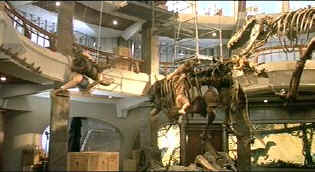

| Jurassic Park (SE)/B+, B+ |
|
Universal/1993/127/ANA 1.85 |
Jurassic
Park is quite a ride. Just get back in line, bump through the turnstile,
and enjoy the ups and downs, the hills and valleys, and the roar of the
dinosaurs all over again. This essentially old fashioned horror film wears
its coat of technology with evident pride.
Director Steven Spielberg has taken some of the
bite out of the Jurassic's creator, John Hammond, and the moral
implications have been clearly subordinated to the ferocious breath of the
dinosaurs. Perhaps more emphasis could have been placed on the
moral import to good effect. Clearly, the choice was to go for the broadest
entertainment value. Box office results may justify the decision.
|
 |
|
Hanging around Jurassic Park. ©Universal |
The film does fall short in its personal
characterizations. They might just as well have been newly created genetic
clones too, as a measure to the depth of their creation. The actors are all
adequate, though Sam Neill does make a rather bland and uninspired hero as
Doctor Alan Grant. Jeff Goldblum has a good deal of fun with the role of
chaos expert Dr. Ian Malcolm and provides almost the entire output of
character based humor. Richard Attenborough is a bit soft and ultimately too
sentimental as Hammond, but I take that as directorial rather than actor's
choice .
In the end, everything is subordinate to the dinos and
that's just fine. Once the dinosaurs are free, Spielberg makes the most of
the excitement with pacing to match the rumbling force of the monstrous
T-Rex. The film is shot in bright, crisp, images by cinematographer Dean
Cundey in his second collaboration with Spielberg, the first being the very
good looking Hook. The score by John Williams has a bit too much of
the wonder of E.T. in it for my taste, but then again it reminds me
that this is more ride than movie. And it's definitely fun.
The high end video community, which waited with
dinosaur breadth for the release of Jurassic Park on DVD, has finally
gotten it's way. But it's not quite perfect. The fantastic visual splendor
of the film has been transferred to DVD with great precision, and save for a
couple of slightly soft scenes, it's reference material. Night scenes are
alive and the ripples of the puddle responding to the pounding steps of
T-Rex is almost deliciously effective as it was in the theater. The
soundtrack is somewhat a disappointment. The explosive bass that
thumped my subwoofers on the laser disc mix are less active on DVD. There's
a touch less air around the music and effects.
This special edition from Universal includes an
excellent making of documentary, some early pre-production meetings
Spielberg has concerning dinosaur development and a host of information
detailing the thoroughness that went into the production of Jurassic Park.
The Foley Artist tidbit really got my cantaloupe juices flowing.
|
|
|
|

Selections from the feature archive include articles on
Akira Kurosawa,
Frank
Darabont,
Blonde
Bimbos,
Hollywood Street Gangs, or
Vietnam:
The Hollywood Pariah, and many more....
Movie Rage: Death in the Aisles
Everyone knows what it feels like to get angry at the movies these days.
Here's a humorous but not so delightful view of big screen misery.


DVDPlanet is the DVD incarnation of legendary laser retailer Ken
Crane's. Deep discounts and serious service.
 Brad Lang continues to add more interesting
material to the extensive collection at
Classic Movies. Everything
from actors and actress to your favorite directors is linked at the site. Brad Lang continues to add more interesting
material to the extensive collection at
Classic Movies. Everything
from actors and actress to your favorite directors is linked at the site.

News, information, features about current films in theaters and in the
pipeline. Easy to use interface.

The DVD Forum is an international association of hardware manufacturers,
software firms and other users of Digital Versatile Discs (the "DVD
Format"), created for the purpose of exchanging and disseminating ideas and
information about the DVD Format and its technical capabilities,
improvements and innovations.

The Movie Poster Archive
includes extensive poster images from the films of stars like Susan Hayward,
Kirk Douglas, Katharine Hepburn and many more. Our featured star is
Doris Day. |